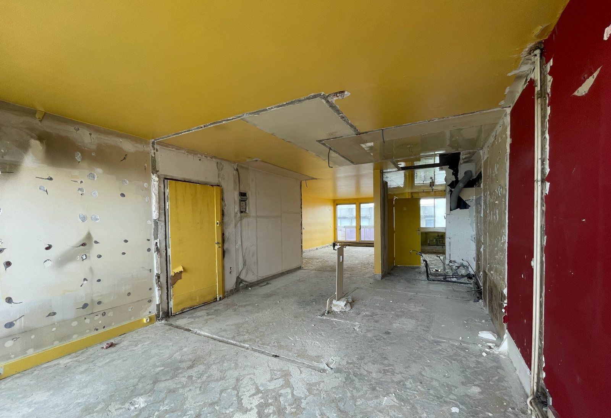

France Deco
Réalisations
Chantiers livrés par France Deco.

 Avant
Après
Avant
Après
SèvresVoir le projet
Médéric

Concorde


Sources
Barber Club

Un chantier à lancer
Décrivez le lieu, ou appelez directement le 06 50 29 50 80.